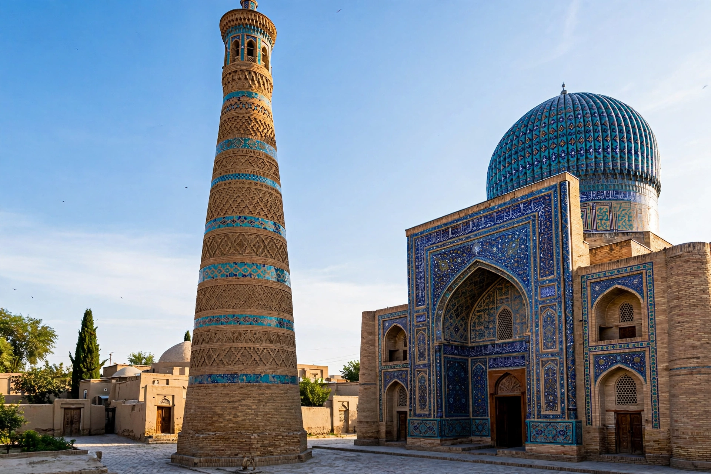

[Image placeholder: The Kalyan minaret and mosque in Bukhara]| Country | Uzbekistan |
|---|---|
| Population | About 280,000 |
| Age | One of Central Asia's oldest cities — over 2,500 years; historic centre a UNESCO site |
**Bukhara** is a city in south-central Uzbekistan and one of the great historic cities of Central Asia, a major centre of trade, scholarship and Islamic culture on the Silk Road for over two thousand years. Its historic centre, a UNESCO World Heritage Site, preserves more medieval mosques, madrasas and bazaars than anywhere else in the region — over 140 protected monuments.
Bukhara flourished under the Persian Samanid dynasty (ninth–tenth centuries), when it rivalled Baghdad as a centre of learning — the philosopher Ibn Sina (Avicenna) grew up nearby and the scholar al-Bukhari, compiler of the most trusted Sunni hadith collection, was born here. Genghis Khan destroyed the city in 1220; it revived under the Timurids and Shaybanids, and the Emirate of Bukhara survived into 1920, when the Red Army deposed the last emir. Icons include the Kalyan minaret (1127), so tall that Genghis reportedly spared it, the Ark citadel, the Chor Minor gatehouse and the domed trading bazaars (toqi).
The Poi Kalyan complex, the Lyab-i Hauz pool surrounded by madrasas and tea houses, the Samanid Mausoleum (a masterpiece of early Islamic brickwork) and the Chor Bakr necropolis anchor the old city; Bukhara's Jewish quarter recalls its ancient Bukharan Jewish community, most of whom emigrated after 1991.